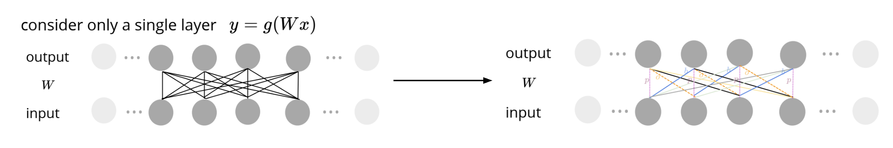
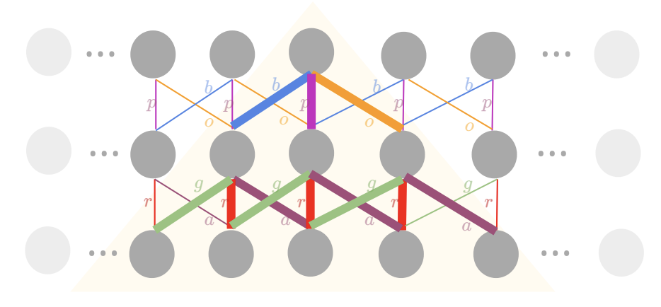
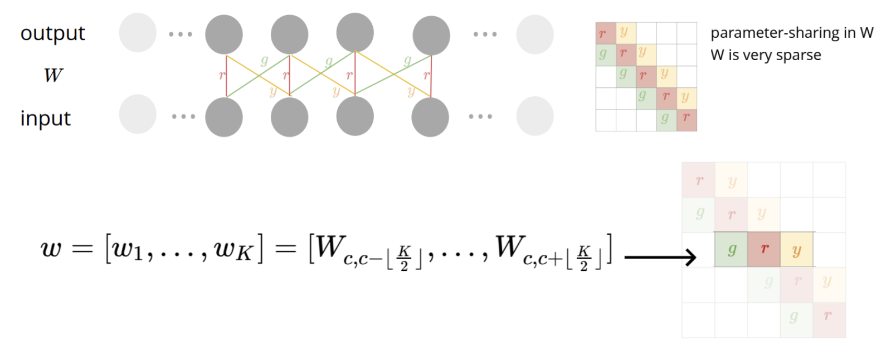
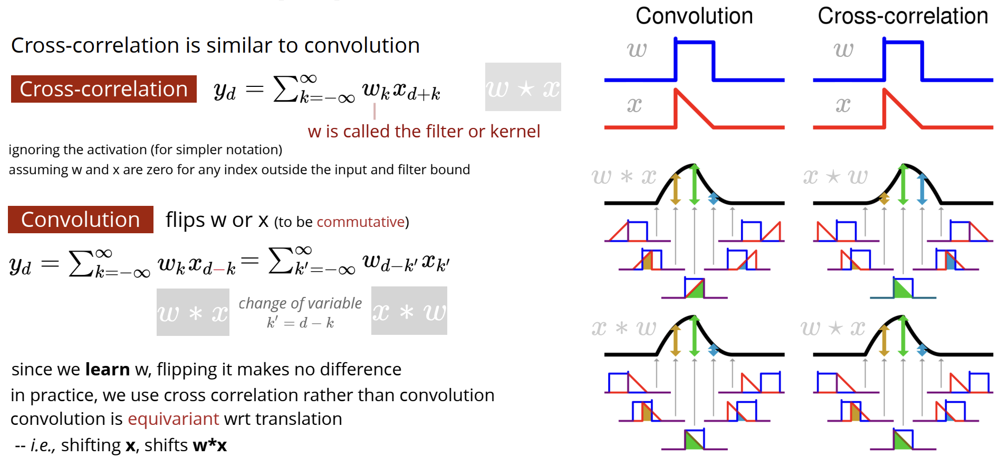
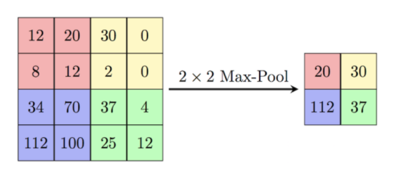
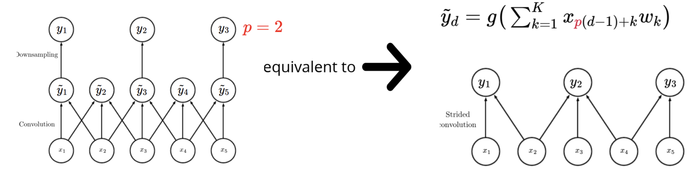
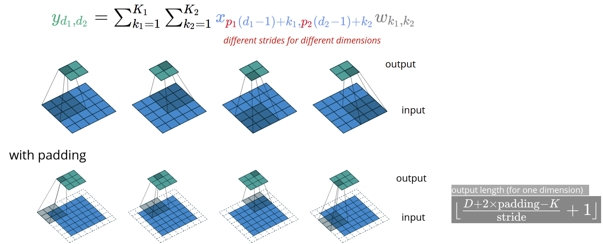
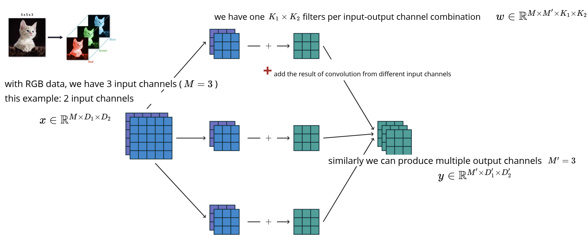
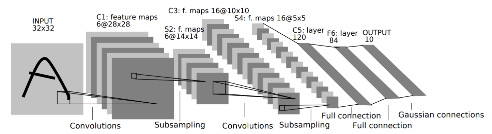

Convolutional Neural Networks
We're going to investigate convolutional neural networks (CNN) through the context of image data, which is the primary use case for CNN's. And so the general idea is to apply MLP to image data, doing so by vectorizing the image input $x\mapsto \text{vec}(x)\in \mathbb{R}^{N}$, for $N$ number of pixels, and here each pixel has some value that encodes for the intensity. Once we have this, we can feed it as input to an MLP.
This sounds like a good plan, but however the model knows nothing about the gross image structure, (i.e the ordering of the pixels doesn't matter for the input of the MLP), and thus if we shuffle around the pixels so that it looks like random white noise, the MLP will have a similar performance. And so, we need a way to bias the mode, so that it "knows" the input image is how it is supposed to look.
Let's start with sequence data to start, for instance, it could be removing background noise from an audio signal, i.e with the input-output pairs $\left\{(x^{(n)},y^{(n)})\right\}$, for the noisy input signal, and the clean output signal, respectively. We consider a signal layer neural network to do this. Here, each input vertex is the signal at different time steps, with the output being the transformed signal at each time. Now, we to add some inductive bias so the model understands we're dealing with a sequence. We do this by still applying the same function at each time step, but shifted along the sequence. We also introduce some parameter sharing in the network, (in the diagram, two weights/edges that have same color have same value) - notice how these weights are preserved under translation.

Furthermore, we may assume that each output is a local function of the input. By local, we mean that only depends on a certain neighbourhood to the output, i.e the weights local to the output are shown in bold below (so in one layer, the output sees 3 neighbouring inputs that are $\pm$1 of the output). Now, if stack an additional layer, like the one shown below, the output unit now "sees" 5 neighbouring inputs. As we can see, as we stack layers, the receptive field, that is, the set of inputs from which the output depends on, will grow in a linear way. This inductive bias seems well suited for the audio signal example, since we are only considering local dependencies. Without this bias, we introduce more variants by increasing the number of parameters by considering all possible dependencies.

With parameter sharing, it is often convenient to put these values into a matrix, as shown below. Coupled with locality, many non-near diagonal entries of the matrix are removed (shown in white). And so, what we would normally do is to multiply this matrix with the input layer. However, we notice that this computation can be a bit wasteful, since due to the parameter sharing, the entire matrix is parametrized by just a couple values (three values in the diagram shown below). And so we define a vector $w$, which will encode the parameters of our matrix (here, $K$ is the number of the local filter).

And so we can re-write the matrix multiplication as cross-correlation of $w$ and $x$ as shown below. You then apply your nonlinear activation function $g$.
$$y_c=g\left(\sum_{d=1}^D W_{c,d}x_d\right)=g\left(\sum_{k=1}^K w_kx_{c-\lfloor \frac K2 \rfloor+k}\right)$$The $w_k$ above is called the filter of the kernel. Cross correlation between functions $w$ and $x$, denoted as $w\star x$, is computed by sliding function $x$ and computing the area bounded between the two functions. Cross-correlation is non-commutative. Convolution is a slightly modified version of cross-correlation that allows it to be commutative. Other than that, they are both the same essentially.

Another concept we will need is pooling, which will reduce the size of the output layer, (i.e from $D\times D$ to $D/2\times D/2$). The way it works is that for each layer, we:
- Calculate the output: $\tilde{y}_d=g\left(\sum_{k=1}^K x_{d-k-1}w_k\right)$
- Aggregate the output over different regions: $y_d=\color{red}\text{pool}\color{black} \left\{\tilde{y}_d,\dots,\tilde{y}_{d+\color{red}p\color{black}}\right\}$. Two common aggregation functions are max and mean.
- Often, this is followed by subsampling using the same step size.

Alternatively, we can directly subsample the output by only selecting a subset of the output values (which is called downsampling). Of course, this is a little inefficient since we still would have to calculate all the outputs, then select a subset. What if, instead, we only calculate the outputs we want to use? This process is called strided convolution. With this, you perform a convolution, but instead of sliding the filter one step at a time, you do so in some interval, skipping steps as you go. In the below example, we set $p=2$, and so we move our filter two steps at a time.

And this concept applies naturally to higher dimension, in particular, two-dimensional image sets. In this case, when you perform the convolution, the filter is no longer a vector, but a small image that you slide across your large image, taking the dot product between the filter and your image. With strided convolution, you move the filter by more than one pixel,
In the below example, your image is $5\times 5$ pixels, your filter is $3\times 3$. When you take the dot product, you get one pixel of your $2\times 2$ output. With strided convolution, we slide or filter across every other pixel (skipping one). Moreover, you can padding to change the size of your output image. Here, the padded cells around the border are pixels with zero intensity.

So far, we have just assumed that the image data is in some grey scale where we can encode one value for its intensity. But most pictures these days are in colour, where each pixel is encoded by three values: red, green, and blue. So to approach this, we overlay multiple color images (called channel), and each channel will have its own convolution filter, and thus the convolution is performed independently for all channels. The results of these can then be summed into one image. If you want your final output to have multiple channels, you will then need to define multiple convolution filters for the input. For the illustration below, we defined six filters, one for each channel, for three separate times.

An informative demo of the 2D computation for convolution is shown here.
Below shows the on-the-whole description of what is happening in a convolutional neural network: you start with an input, you then perform a convolution operation with perhaps several filters to get multiple channels. Then, you may subsample this data either by pooling or strided convolution, leaving you with an intermediate activation with smaller size. You then repeat these convolutions and subsampling until you get the output of the dimension you want.
